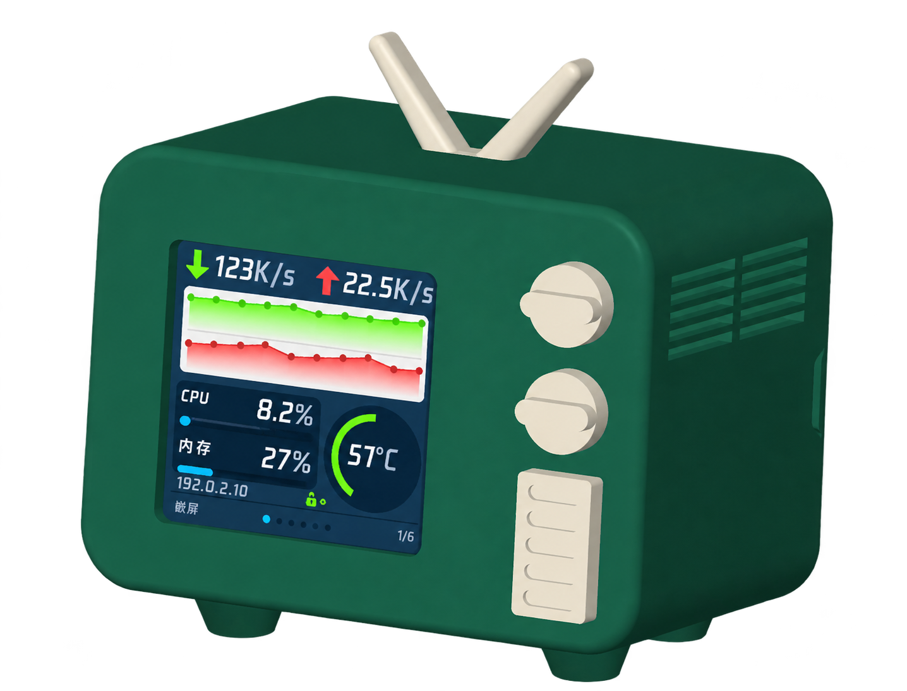

MOS2 · ESP8266 · 4MB
在线安装 MOS2-NAS
让 MOS2 成为桌面时钟、天气屏与多设备 SNMP 监控屏。

1. 在线刷写
请使用电脑端 Chrome 或 Edge，通过 USB 数据线连接 MOS2，并关闭占用串口的软件。
这是全新安装：会覆盖设备配置、照片和字库。保留数据升级请使用设备后台的「维护 → 固件升级」。
连接后选择 MOS2 对应的串口；刷写工具的原生对话框使用英文。刷写期间请保持供电。
2. 配网与使用
- 首次启动，加入 MOS2-NAS-xxxxxx 热点，密码 12345678。
- 打开 http://192.168.4.1/，连接 2.4GHz Wi-Fi。
- 联网后五击屏幕，扫码进入管理页。默认密码 12345678，首次登录必须修改。
- 在「SNMP 配置」中添加设备，保存并重启。